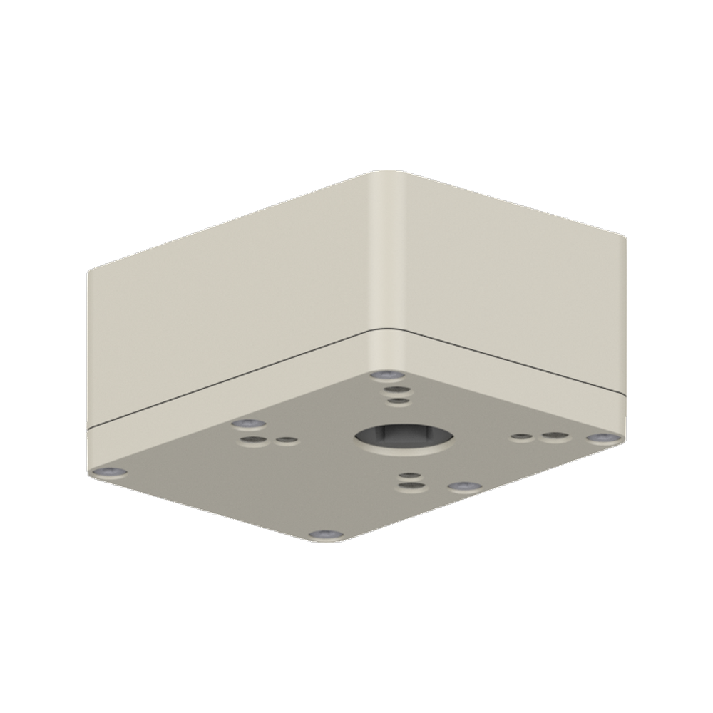

Konfigurator für Dreh- und Schwenkantriebe mit getrennter Auswahl von Haube, Zusatzgetriebe und Wellenform.
Der Konfigurator nutzt transparente PNG-Layer. Das Gehäuse bleibt fixer Nullpunkt; Zusatzgetriebe und Wellenform werden getrennt ausgewählt.




Die Auswahl kommt aus assets/data/agromatic-master-config.json. Zusatzgetriebe und Welle sind getrennte Kriterien; bei „mit Zusatzgetriebe“ wird das passende Kombibild geladen.